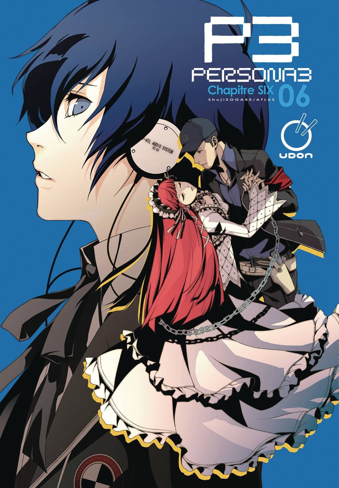
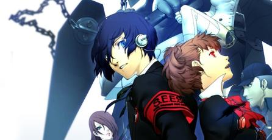
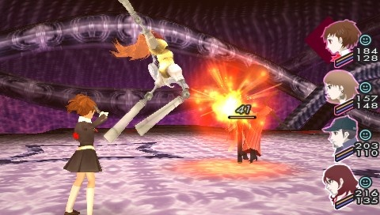
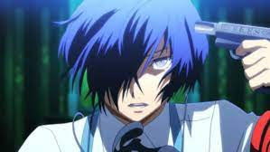

Jugabilidad
Historia
Rediciones de juego
Rankings
Shin Megami Tensei: Persona 3, lanzado en Japon simplemente como Persona 3 es el cuarto juego de la serie Persona, spin-off de la serie Megami Tensei (Persona 2: Innocent Sin y
Persona 2: Eternal Punishment son considerados dos juegos por separado). Fue desarrollado y distribuido por Atlus para la consola PlayStation 2.
Los personajes principales de Persona 3 hacen su aparicion en el videojuego de ritmo, Persona 3: Dancing in Moonlight, con fecha de estreno en Japon el 24 de mayo de
2018, y el 4 de diciembre de 2018 en Norteamerica.
 |
JUGABILIDAD
Algo que podria tomarse como un gran cambio a diferencia de juegos anteriores en la saga, es que Persona 3 cuenta con una mezcla inusual entre simulador de vida
escolar y RPG; donde a diferencia de la mayoria de RPGs a la fecha, los días pasan basandose en el calendario. Aqui la escuela toma un rol importante, donde debes
acudir a eventos escolares, clubes, estudiar, atender asuntos con otros personajes; pero cuando llega la noche, se debe explorar el Tartarus (dependiendo de tu
condicion fisica). El Tartarus, es una "torre-laberinto" infestada de monstruos llamados Shadows, en cual se transforma la escuela a la medianoche. Este cambio entre
dia y noche, le da un toque que hace resaltar a este juego entre la saga de Shin Megami Tensei y cualquier otro RPG hasta el momento.
En pelea, los personajes son ayudados por sus Personas, seres que son llamados con la ayuda de un instrumento en forma de pistola llamada "Evoker" (Evocador), con el
cual deben apuntarse a la cabeza y dispararse para invocar a su Persona. En combate solo se controla al personaje principal, mientras que sus companeros ejercen sus
turnos mediante inteligencia artificial u ordenar a tus companeros especificos Comandos directos, a pesar de esto se le pueden dar parametros de estrategia a tus
aliados si el jugador lo desea o no. Dependiendo como se lleven las relaciones con los demas, se podran conseguir nuevos y mas poderosos Personas o mejorar a los
ya adquiridos mediante el sistema de "Social Links" (Enlaces sociales), lo cual lleva a que la parte social dentro del juego sea de gran importancia dentro del mismo.
 |
HISTORIA
|
Un adolescente que quedo huerfano a temprana edad regresa a la ciudad de su infancia, Iwatodai. Poco despues de ser transferido a la escuela preparatoria Gekkoukan
es atacado por sombras, criaturas que se alimentan de la mente de sus victimas. Este ataque despierta su Persona interior, Orpheus, su unica oportunidad para vencer
a estas criaturas de la noche. Pronto descubre que otros estudiantes de la escuela tambien tienen ese poder. De ellos aprende todo sobre la "Dark Hour" (Hora oscura)
una hora oculta que separa un dia del siguiente; y que sume al mundo en las sombras. Todo se paraliza, dejando campar a sus anchas a todas las sombras. El
protagonista se une al grupo "Specialized Extracurricular Execution Squad" (Unidad Extraescolar Especializada en Ejecuciones -de sus misiones-, SEES), y con sus
compañeros, lucha contra la amenaza de las sombras, y a la vez que exploran el Tartarus, una extrana y gigantesca torre repleta de peligros en la que se transforma
la escuela durante la Dark Hour.
 |
REDICIONES DEL JUEGO
Persona 3 FES
El 19 de abril de 2007, Atlus lanzo un disco extra para el juego Persona 3, llamado Persona 3 FES una version con extras varios al cual tambien se le puede catalogar
como una "expansion" del título original, ya que Atlus puso a la venta el titulo en 2 versiones o formatos, la "Independent Starting Version" la cual no requiere de
tener una copia del titulo original para jugar Persona 3 FES y la "Append Edition" la cual es necesario tener una copia original de Persona 3 para poder comenzar a
jugar. Fuera de Japon el titulo se comercializo como un solo titulo con Persona 3 y Persona 3 FES juntos en el mismo disco para (muy probablemente) evitar confusiones
entre los compradores.
De acuerdo con el director del juego, Katsura Hashino, el subtitulo "FES" proviene de la palabra "festival".
Aparte de adherir nuevo contenido en gran cantidad (tanto en el sistema de juego como en historia) al juego principal, tambien incluye una continuacion titulada
Episodio: Aegis dando unas 30 horas de juego extra aproximadamente. Al iniciar el juego, el jugador puede elegir entre el Episodio: Tu Mismo (En la versión americana
"The Journey" (El Viaje)) o el Episodio: Aegis (Version americana, "The Answer" (La Respuesta)). El Episodio: Tu Mismo es el mismo que el original, pero con nueva
misiones, eventos y minimos (pero no por ellos importantes) cambios y arreglos en el sistema de juego y el Episodio: Aegis puede ser considerado una secuela
con Aegis como personaje principal, y el verdadero final. FES tambien contiene nuevos trajes, y un nuevo sistema de sintesis de armas, veintitres nuevas Personas
y la dificultad dificil como opcion desde el principio (el original solo venia con las dificultades Fácil y Normal).
La version americana no conto con el contenido de FES, aunque este salio a la venta despues de su lanzamiento. FES fue lanzado al mercado americano el 22 de abril de
2007.
Persona 3 Portable
Fue lanzado el 1 de noviembre de 2009 en Japon y en Norteamerica el 6 de julio de 2010, siendo una nueva reedicion de Persona 3 para la consola portatil de Sony
la PSP. Respecto a la version original existen varios cambios: se elimina "The Answer" aunque se mantienen todos las demas mejoras de FES (ademas de agregar otras
mejoras menores al juego), y se incluye una protagonista femenina con Social Links alternativos a los del protagonista masculino. Tambien cuenta con 5 niveles de
dificultad y el sistema de navegacion por el mundo ha sido remplazado por una imagen fija con los elementos puestos en pantalla y utilizables mediante un cursor tipo
"mouse" que se desplaza por la pantalla, pero en Tartarus la exploracion es igual que en el original. Ademas se han eliminado todas las cinematicas presentes en las
versiones para PS2, y ahora solo se representan en su mayoria por medio de cuadros de texto, dandole aun mas ese aire de novela visual aunque perdiendose varios
matices en el proceso.
Se le puede considerar como una version mas agil de Persona 3 FES ya que las partes del "mazmorreo" son menos tediosas que en los titulos para PS2, agregando
tambien el sistema de combate de Persona 4 que permite controlar a todos los miembros de tu equipo en lugar de unicamente al protagonista.
La protagonista femenina posee una nueva banda sonora compuesta por Shoji Meguro, y se agrega una intro cinemática exclusiva de este juego llamada "Soul Phrase".
RANKINGS
Su calificacion esta vez fue de 89%, lo que para estandares es una calificacion
muy buena para un juego tan de nicho
 |
Menu principal |